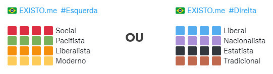

Uma "Breve" Introdução

Bem-Vindo ao EXISTO.me
Este web site apresenta uma versão abrasileirada do teste de coordenadas políticas disposto no site 8values. Foram feitas modificações em algumas questões para se adaptarem à realidade brasileira e também foi adotado um modelo mais simples de respostas, substituindo a Escala Likert (concordo, discordo totalmente, etc) adotada pelo 8values. Para responder às questões, você deverá selecionar aquela opção que melhor representa seus valores pessoais e suas escolhas de vida. Responda honestamente!
A operação do site é bastante simples e intuitiva. Ao abrir a página principal você já poderá iniciar o teste de imediato, sem necessidade de efetuar login ou qualquer outra configuração. Ao final do teste será apresentado o seu resultado, com a pontuação de suas respostas distribuída em 8 posicionamentos dos 4 eixos ideológicos adotados: Econômico, Diplomático, Civil e Social. Caso queira, você poderá compartilhar o resultado em suas redes sociais, com o seguinte aspecto (imagem meramente ilustrativa):
Aproveitamos para deixar aqui nosso "Muito Obrigado!" a TristanBomb, desenvolvedor do 8values; e também a Rafael Arrais pela excelente tradução para o Português do 8values em seu web site. Por último, não menos importante, a Josh Wardle, o desenvolvedor por trás do jogo de palavras Wordle, que nos inspirou na formatação do resultado para compartilhamento nas redes sociais.
O Que São os Oito Valores?
Cada um dos quatro eixos ideológicos - Econômico, Diplomático, Civil e Social - possuem dois valores opostos atribuídos a eles. Estes valores são:
- 1. ECONÔMICO:
- Igualdade = Aqueles com uma pontuação maior em Igualdade acreditam que a economia deve distribuir valor igualmente entre a população. Estes tendem a apoiar leis tributárias progressivas, programas sociais, e no geral, socialismo.
- Mercado = Aqueles com uma pontuação maior em Mercado acreditam que a economia deve focar em crescimento rápido. Estes tendem a apoiar impostos mais baixos, privatização, desregulamentação, e no geral, capitalismo laissez-faire (liberalismo).
- 2. DIPLOMÁTICO:
- Globalização = Aqueles com uma pontuação maior em Globalização são cosmopolitas. Estes geralmente acreditam numa política externa pacífica, enfatizando diplomacia, cooperação, integração, e no geral, uma unidade global de interesse mútuo.
- Nacionalismo = Aqueles com uma pontuação maior em Nacionalismo são patriotas. Estes geralmente acreditam numa política externa agressiva, valorizando as forças armadas, a soberania nacional, e se preciso, o uso da força militar.
- 3. CIVIL:
- Liberdade = Aqueles com uma pontuação maior em Liberdade acreditam em forte liberdade civil. Estes tendem a apoiar democracia e opor-se à intervenção do Estado nas vidas pessoais. Note que isto se refere a liberdades civis, não a liberdades econômicas.
- Autoridade = Aqueles com uma pontuação maior em Autoridade acreditam em forte poder do Estado. Estes tendem a apoiar a intervenção do Estado nas vidas pessoais, fiscalização governamental, e se preciso, censura ou autocracia.
- 4. SOCIAL:
- Progresso = Aqueles com uma pontuação maior em Progresso acreditam em avanços sociais e racionalidade. Embora nem sempre, usualmente são seculares ou agnósticos, e apoiam ações ambientais e grandes investimentos em pesquisa científica ou tecnológica.
- Tradição = Aqueles com uma pontuação maior em Tradição acreditam em valores conservadores e aderência estrita a um código moral. Embora nem sempre, usualmente são religiosos, e apoiam o status quo vigente.
Porque "Existo-me"?
A expressão "Penso, logo existo" é bastante conhecida, assim como a original em latim: "Cogito, ergo sum". São formas abreviadas de uma citação de René Descartes (1596-1650) em seu livro "O Discurso do Método" de 1637. A frase original foi escrita inicialmente em francês e depois traduzida para o Latim:
"Puisque je doute, je pense; puisque je pense, j'existe."
- Frase original em Francês.
"Ego cogito, ergo sum sive existo."
- Tradução para Latim.
"Já que duvido, penso; desde que eu penso, eu existo."
- Tradução para Português.
Assim como Descartes alcançou essa conclusão após duvidar da verdade de todas as coisas, eventualmente você também irá questionar a verdade apresentada pelos governantes e políticos em nosso país. E o primeiro passo para buscar a sua verdade é olhar para si mesmo, observar seus valores humanos e seus princípios pessoais.
Este teste do GPS Político foi criado para auxiliar você nesta jornada, para servir de referência neste primeiro passo rumo à consciência política. Nós somos escravos do conhecimento. Ficamos à mercê daqueles que se utilizam do conhecimento para nos oprimir e subjugar. Somente o saber liberta.
Esperamos que o conhecimento que você adquira neste web site possa lhe guiar na busca da verdade, para que você possa finalmente entender o que realmente tem acontecido em nosso país nas últimas décadas. É seu direito universal manifestar a sua opinião política e o seu voto. Votar é seu direito, participar é seu dever. Você pensa; Você existe; Você importa!
Artigo 21º da Declaração Universal dos Direitos Humanos
- 1. Toda a pessoa tem o direito de tomar parte na direção dos negócios públicos do seu país, quer diretamente, quer por intermédio de representantes livremente escolhidos.
- 2. Toda a pessoa tem direito de acesso, em condições de igualdade, às funções públicas do seu país.
- 3. A vontade do povo é o fundamento da autoridade dos poderes públicos: e deve exprimir-se através de eleições honestas a realizar periodicamente por sufrágio universal e igual, com voto secreto ou segundo processo equivalente que salvaguarde a liberdade de voto.